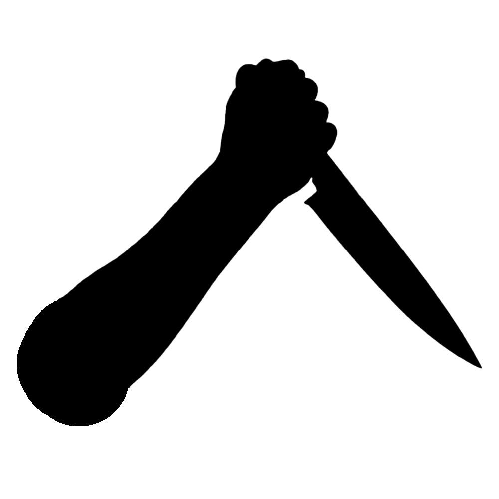

de nummer i podcast over waargebeurde moordzaken
Luister nu"Waar moord waarheid word"
Ben jij een echte liefhebber van true crime verhalen? Zo ja, dan zit u hier op het juiste adres. Wij vertellen de meest bizarre verhalen van over de hele wereld na. En zoals onze slogan al zegt, waar moord waarheid wordt. Dit is helaas van toepassing bij de meeste true crime zaken... Daarom Vertellen wij de verhalen van de slachtoffers op een respectvolle manier na.
ons team
Ons kleine team bestaat uit 3 collega's: Job Vastenhout, Lois Brandsen en Emma Boonstra. Wij zijn drie eerstejaars studenten wie wel houden van een spannend verhaal. In onze podcast spreken wij over waargebeurde moordzaken om zo meer aandacht te brengen aan het True Crime onderwerp.